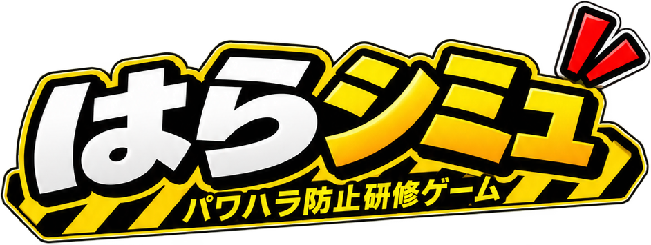

シナリオを
読み込めませんでした
開き直す手順
フォルダの中で次のどちらかを実行し、表示された http://localhost:8000 を開いてください。
python -m http.server 8000 npx serve .
サーバーに置いた場合と、スマートフォンから開く場合は、この操作は不要です。
詳細

会話を読み、行き過ぎていると思う発言をタップして指摘してください。正しく見抜けた数だけでなく、言いすぎだと誤って判断した数も記録されます。
どのシナリオにも、問題のある発言と、厳しいけれど適正な業務指導の両方が含まれています。
指摘すると、その場で判定の理由が出ます。最後に、見逃した発言と指摘できた発言をまとめて振り返れます。
収録されているシーンがありません。
指摘 0 件
1 / 1
課長
結果
0%
0該当した発言の数
0指摘できた数
0言いすぎと誤認した数
指摘できた発言
見逃した発言
ご意見・お問い合わせ
追加してほしいシーン、判定への疑問、不具合のご報告などをお送りください。
メールで問い合わせるコピーしました
お使いのメールアプリが開きます。書いた内容は、ご自身が送信するまでどこにも送られません。メールアプリをお使いでない場合は、上のアドレス宛にお送りください。